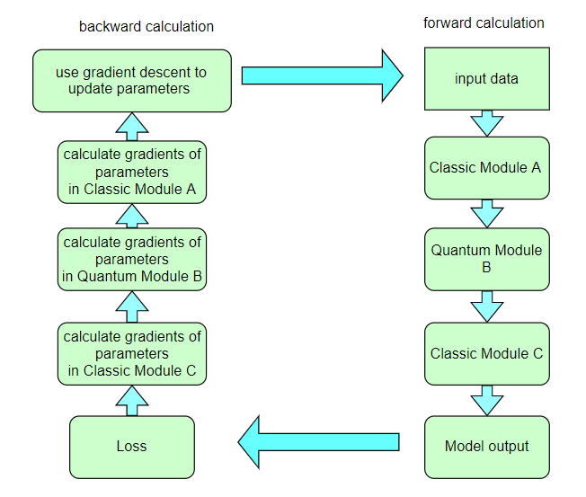
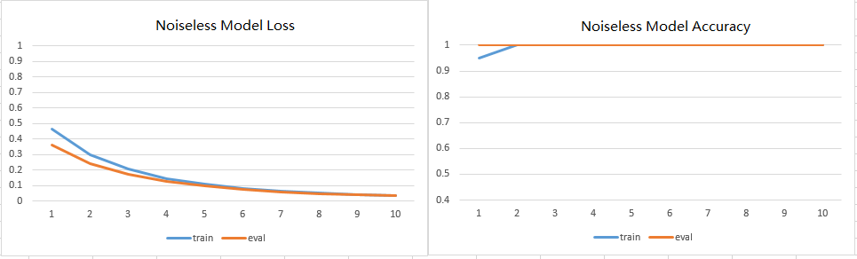

PQC is a quantum circuit with trainable parameters.
The quantum circuit with parameters here is defined by pyQPanda.
We first use an encoding quantum circuit to encode classica data into a quantum state.
The classic data encoding circuit is not fixed, an IQP encoding circuit is used here.
7 RX quantum logic gates are used , and 7 classic data features are respectively encoded on 4 qubits.
Next is the quantum circuit part with variable parameters. We use HardwareEfficientAnsatz here.
First, 4 qubits are placed on the RX gate, and then a combination of 3 Z gates and 4 RZ gates is inserted.
The Hamiltonian measurement of the PQC quantum circuit is used as the prediction of model to optimize the classification task.
This example uses VQNet to implement the algorithm in the thesis: Circuit-centric quantum classifiers .
This example is used to determine whether a binary number is odd or even. By encoding the binary number onto the qubit and optimizing the variable parameters in the circuit,
the z-direction observation of the circuit can indicate whether the input is odd or even.
The variable component sub-circuit usually defines a sub-circuit, which is a basic circuit architecture, and complex variational circuits can be constructed by repeating layers.
Our circuit layer consists of multiple rotating quantum logic gates and CNOT quantum logic gates that entangle each qubit with its neighboring qubits.
We also need a circuit to encode classical data into a quantum state, so that the output of the circuit measurement is related to the input.
In this example, we encode the binary input onto the qubits in the corresponding order. For example, the input data 1101 is encoded into 4 qubits.
We have defined variable quantum circuits qvc_circuits .
We hope to use it in our VQNet’s automatic differentiation logic,
and use VQNet’s optimization algorithm for model training.
We define a Model class, which inherits from the abstract class Module.
The model uses the QuantumLayer class, which is a quantum computing layer that can be automatically differentiated.
qvc_circuits is the quantum circuit we want to run,
24 is the number of all quantum circuit parameters that need to be trained,
“cpu” means that pyQPanda’s full amplitude simulator is used here,
and 4 means that 4 qubits need to be applied for.
In the forward() function, the user defines the logic of the model to run forward.
We use pre-generated random binary numbers and their odd and even labels.
The data is in qvc_data.txt and qvc_data_test.txt
in the data directory of the VQNet root directory.
Then you can perform model forwarding, loss function calculation,
reverse calculation, optimizer calculation according to the general
neural network training mode,until the number of iterations reaches the preset value.
defget_accuary(result,label):result,label=np.array(result.data),np.array(label.data)score=np.sum(np.argmax(result,axis=1)==np.argmax(label,1))returnscore#Example Model Classmodel=Model()#Create a SGD optimizer to optimize the model's parametersoptimizer=SGD(model.parameters(),lr=0.1)#set batch_size = 3batch_size=3#maximum epochsepoch=20#model's loss functionloss=CategoricalCrossEntropy()model.train()PATH=os.path.abspath('qvc_data.txt')datas,labels=get_data(PATH)foriinrange(epoch):count=0sum_loss=0accuary=0t=0fordata,labelindataloader(datas,labels,batch_size,False):optimizer.zero_grad()data,label=QTensor(data),QTensor(label)result=model(data)loss_b=loss(label,result)loss_b.backward()optimizer._step()sum_loss+=loss_b.item()count+=batch_sizeaccuary+=get_accuary(result,label)t=t+1print(f"epoch:{i}, #### loss:{sum_loss/count} #####accuray:{accuary/count}")model.eval()count=0test_PATH=os.path.abspath('qvc_data_test.txt')test_data,test_label=get_data(test_PATH)test_batch_size=1accuary=0sum_loss=0fortestd,testlindataloader(test_data,test_label,test_batch_size):testd=QTensor(testd)test_result=model(testd)test_loss=loss(testl,test_result)sum_loss+=test_losscount+=test_batch_sizeaccuary+=get_accuary(test_result,testl)print(f"test:--------------->loss:{sum_loss/count} #####accuray:{accuary/count}")
In a neural network, each neuron receives information from all neurons in the upper layer (Figure a).
In contrast, the single-bit quantum classifier accepts the previous information processing unit and input (Figure b).
For traditional quantum circuits, when the data is uploaded, the result can be obtained directly through several unitary
transformations: math:U(theta_1,theta_2,theta_3).However, in the Quantum Data Re upLoading (QDRL) task, the data needs to be re-uploaded before every unitary transformation.
Comparison of QDRL and classic neural network schematics
"""Parameterized quantum circuit for Quantum Data Re-upLoadingref: ..\\..\\tutorials\QDRL\\QDRL demo.md"""importosimportsysfrompyvqnet.nn.linearimportLinearfrompyvqnet.qnn.qdrl.vqnet_modelimportvmodelfrompyvqnetimport_coreasvcorefrompyvqnet.optimimportsgdfrompyvqnet.nnimportlossfrompyvqnet.nn.lossimportCategoricalCrossEntropy#hyperparametersfrompyvqnet.tensor.tensorimportQTensorfrompyvqnet.tensorimporttensorimportmatplotlibmatplotlib.use('TkAgg')importmatplotlib.pyplotaspltimportnumpyasnpnp.random.seed(42)frompyvqnet.nn.moduleimportModulenum_layers=3params=np.random.uniform(size=(num_layers,3))#Create a Module to define the modelclassModel(Module):def__init__(self):super(Model,self).__init__()self.pqc=vmodel(params.shape)defforward(self,x):x=self.pqc(x)returnxdefcircle(samples:int,reps=np.sqrt(1/2)):data_x,data_y=[],[]foriinrange(samples):x=np.random.rand(2)y=[0,1]ifnp.linalg.norm(x)<reps:y=[1,0]data_x.append(x)data_y.append(y)returnnp.array(data_x),np.array(data_y)defplot_data(x,y,fig=None,ax=None):""" Plot data with red/blue values for a binary classification. Args: x (array[tuple]): array of data points as tuples y (array[int]): array of data points as tuples """iffig==None:fig,ax=plt.subplots(1,1,figsize=(5,5))reds=y==0blues=y==1ax.scatter(x[reds,0],x[reds,1],c="red",s=20,edgecolor="k")ax.scatter(x[blues,0],x[blues,1],c="blue",s=20,edgecolor="k")ax.set_xlabel("$x_1$")ax.set_ylabel("$x_2$")defget_minibatch_data(x_data,label,batch_size):foriinrange(0,x_data.data.shape[0]-batch_size+1,batch_size):yieldx_data.data.select(["{}:{}".format(i,i+batch_size)]),label.data.select(["{}:{}".format(i,i+batch_size)]).reshape([batch_size,2])defget_score(pred,label):pred,label=np.array(pred.data),np.array(label.data)score=np.sum(np.argmax(pred,axis=1)==np.argmax(label,1))returnscoremodel=Model()optimizer=sgd.SGD(model.parameters(),lr=1)batch_size=5#train on random genearated samplesdeftrain():model.train()x_train,y_train=circle(500)x_train=np.hstack((x_train,np.ones((x_train.shape[0],1))))# 500*3x_train,y_train=QTensor(x_train),QTensor(y_train)epoch=10print("start training...........")foriinrange(epoch):accuracy=0count=0loss=0fordata,labelinget_minibatch_data(x_train,y_train,batch_size):optimizer.zero_grad()data,label=QTensor(data),QTensor(label)output=model(data)Closs=CategoricalCrossEntropy()losss=Closs(label,output)losss.backward()optimizer._step()accuracy+=get_score(output,label)loss+=losss.item()print(f"epoch:{i}, train_accuracy:{accuracy}")print(f"epoch:{i}, train_loss:{losss.data.getdata()}")count+=batch_sizeprint(f"epoch:{i}, train_accuracy_for_each_batch:{accuracy/count}")print(f"epoch:{i}, train_loss_for_each_batch:{loss/count}")#test on random genearated samplesdeftest():model.eval()print("start eval...................")x_test,y_test=circle(500)test_accuracy=0count=0x_test=np.hstack((x_test,np.ones((x_test.shape[0],1))))x_test,y_test=QTensor(x_test),QTensor(y_test)fortest_data,test_labelinget_minibatch_data(x_test,y_test,batch_size):test_data,test_label=QTensor(test_data),QTensor(test_label)output=model(test_data)test_accuracy+=get_score(output,test_label)count+=batch_sizeprint(f"test_accuracy:{test_accuracy/count}")if__name__=="__main__":train()test()
The folling picture illustrates the curve of model’s accuracy：
4. VSQL: Variational Shadow Quantum Learning for Classification Model¶
Using variable quantum circuits to construct a two-class classification model,
comparing the classification accuracy with a neural network with similar parameter accuracy,
the accuracy of the two is similar. The quantity of parameters of quantum circuits is much smaller than that of classical neural networks.
The algorithm is based on the paper: Variational Shadow Quantum Learning for Classification Model to
reproduce.
The classic autoencoder is a neural network that can learn high-efficiency low-dimensional representations of data in a high-dimensional space.
The task of the autoencoder is to map x to a low-dimensional point y given an input x, so that x can be recovered from y.
The structure of the underlying autoencoder network can be selected to represent the data in a smaller dimension, thereby effectively compressing the input.
Inspired by this idea, the model of quantum autoencoder is used to perform similar tasks on quantum data.
Quantum autoencoders are trained to compress specific data sets of quantum states, and classical compression algorithms cannot be used.
The parameters of the quantum autoencoder are trained using classical optimization algorithms.
We show an example of a simple programmable circuit, which can be trained as an efficient autoencoder.
We apply our model in the context of quantum simulation to compress the Hubbard model and the ground state of the Hamiltonian.
This algorithm is based on Quantum autoencoders for efficient compression of quantum data .
"""Quantum AutoEncoder demoref: ..\\..\\tutorials\QAE\\QuantumAutoEncoder.md"""importsysimportosimportnumpyasnpfrompyvqnet.nn.moduleimportModulefrompyvqnet.nn.lossimportCategoricalCrossEntropy,fidelityLossfrompyvqnet.optim.adamimportAdamfrompyvqnet.optim.sgdimportSGDfrompyvqnet.data.dataimportdata_generatorfrompyvqnet.qnn.qae.qaeimportQAElayerfrompyvqnet.nn.lossimportLossimportmatplotlibmatplotlib.use('TkAgg')importmatplotlib.pyplotasplt#define the modelclassModel(Module):def__init__(self,trash_num:int=2,total_num:int=7):super().__init__()self.pqc=QAElayer(trash_num,total_num)defforward(self,x):x=self.pqc(x)#x = self.fc(x)returnx#load mnist datasetdefload_mnist(dataset="training_data",digits=np.arange(2),path="..//..//data//MNIST_data"):importos,structfromarrayimportarrayaspyarrayifdataset=="training_data":fname_image=os.path.join(path,'train-images.idx3-ubyte').replace('\\','/')fname_label=os.path.join(path,'train-labels.idx1-ubyte').replace('\\','/')elifdataset=="testing_data":fname_image=os.path.join(path,'t10k-images.idx3-ubyte').replace('\\','/')fname_label=os.path.join(path,'t10k-labels.idx1-ubyte').replace('\\','/')else:raiseValueError("dataset must be 'training_data' or 'testing_data'")flbl=open(fname_label,'rb')magic_nr,size=struct.unpack(">II",flbl.read(8))lbl=pyarray("b",flbl.read())flbl.close()fimg=open(fname_image,'rb')magic_nr,size,rows,cols=struct.unpack(">IIII",fimg.read(16))img=pyarray("B",fimg.read())fimg.close()ind=[kforkinrange(size)iflbl[k]indigits]N=len(ind)images=np.zeros((N,rows,cols))labels=np.zeros((N,1),dtype=int)foriinrange(len(ind)):images[i]=np.array(img[ind[i]*rows*cols:(ind[i]+1)*rows*cols]).reshape((rows,cols))labels[i]=lbl[ind[i]]returnimages,labelsdefrun2():##load dataset#x_train,x_test,y_train,y_test = load_mnist("training_data")x_train,y_train=load_mnist("training_data")x_train=x_train/255x_test,y_test=load_mnist("testing_data")x_test=x_test/255x_train=x_train.reshape([-1,1,28,28])x_test=x_test.reshape([-1,1,28,28])x_train=x_train[:100,:,:,:]x_train=np.resize(x_train,[x_train.shape[0],1,2,2])x_test=x_test[:10,:,:,:]x_test=np.resize(x_test,[x_test.shape[0],1,2,2])encode_qubits=4latent_qubits=2trash_qubits=encode_qubits-latent_qubitstotal_qubits=1+trash_qubits+encode_qubitsprint("model start")#create model instancemodel=Model(trash_qubits,total_qubits)#create optimizeroptimizer=Adam(model.parameters(),lr=0.005)model.train()F1=open("rlt.txt","w")loss_list=[]loss_list_test=[]fidelity_train=[]fidelity_val=[]forepochinrange(1,10):running_fidelity_train=0running_fidelity_val=0print(f"epoch {epoch}")model.train()full_loss=0n_loss=0n_eval=0batch_size=1correct=0iter=0ifepoch%5==1:optimizer.lr=optimizer.lr*0.5forx,yindata_generator(x_train,y_train,batch_size=batch_size,shuffle=True):#shuffle batch rather than datax=x.reshape((-1,encode_qubits))x=np.concatenate((np.zeros([batch_size,1+trash_qubits]),x),1)optimizer.zero_grad()output=model(x)iter+=1np_out=np.array(output.data)floss=fidelityLoss()loss=floss(output)loss_data=np.array(loss.data)loss.backward()running_fidelity_train+=np_out[0]optimizer._step()full_loss+=loss_data[0]n_loss+=batch_sizenp_output=np.array(output.data,copy=False)mask=np_output.argmax(1)==y.argmax(1)correct+=sum(mask)loss_output=full_loss/n_lossprint(f"Epoch: {epoch}, Loss: {loss_output}")loss_list.append(loss_output)# Evaluationmodel.eval()correct=0full_loss=0n_loss=0n_eval=0batch_size=1forx,yindata_generator(x_test,y_test,batch_size=batch_size,shuffle=True):x=x.reshape((-1,encode_qubits))x=np.concatenate((np.zeros([batch_size,1+trash_qubits]),x),1)output=model(x)floss=fidelityLoss()loss=floss(output)loss_data=np.array(loss.data)full_loss+=loss_data[0]running_fidelity_val+=np.array(output.data)[0]n_eval+=1n_loss+=1loss_output=full_loss/n_lossprint(f"Epoch: {epoch}, Loss: {loss_output}")loss_list_test.append(loss_output)fidelity_train.append(running_fidelity_train/64)fidelity_val.append(running_fidelity_val/64)figure_path=os.path.join(os.getcwd(),'QAE-rate1.png')plt.plot(loss_list,color="blue",label="train")plt.plot(loss_list_test,color="red",label="validation")plt.title('QAE')plt.xlabel("Epochs")plt.ylabel("Loss")plt.legend(loc="upper right")plt.savefig(figure_path)plt.show()F1.write(f"done\n")F1.close()delmodelif__name__=='__main__':run2()
The QAE error value obtained by running the above code, the loss is 1/fidelity, tending to 1 means the fidelity is close to 1.
In the quantum circuit structure, the most frequently used quantum gates with parameters are RZ , RY , and RX gates, but which gate to use under what circumstances is a question worth studying. One method is random selection, but in this case It is very likely that the best results will not be achieved.
The core goal of Quantum circuit structure learning task is to find the optimal combination of quantum gates with parameters.
The approach here is that this set of optimal quantum logic gates should make the loss function to be the minimum.
"""Quantum Circuits Strcture Learning Demoref: ..\\..\\tutorials\QCSL\\QCSL demo.md"""importosimportsysimportpyqpandaaspqfrompyvqnet.tensor.tensorimportQTensorfrompyvqnet.nn.moduleimportModuleimportnumpyasnpfrompyvqnet._coreimportTensorasCoreTensorimportcopyfrompyvqnet.qnn.measureimportexpvalmachine=pq.CPUQVM()machine.init_qvm()nqbits=machine.qAlloc_many(2)#genearate candidate quantum gatesdefgen(param:CoreTensor,generators,qbits,circuit):ifgenerators=="X":circuit.insert(pq.RX(qbits,param))elifgenerators=="Y":circuit.insert(pq.RY(qbits,param))else:circuit.insert(pq.RZ(qbits,param))#generate circuits based on candidate quantum gatesdefcircuits(params,generators,circuit):gen(params[0],generators[0],nqbits[0],circuit)gen(params[1],generators[1],nqbits[1],circuit)circuit.insert(pq.CNOT(nqbits[0],nqbits[1]))prog=pq.QProg()prog.insert(circuit)returnprogdefansatz1(params:QTensor,generators):circuit=pq.QCircuit()params=params.data.getdata()prog=circuits(params,generators,circuit)returnexpval(machine,prog,{"Z0":1},nqbits),expval(machine,prog,{"Y1":1},nqbits)defansatz2(params:QTensor,generators):circuit=pq.QCircuit()params=params.data.getdata()prog=circuits(params,generators,circuit)returnexpval(machine,prog,{"X0":1},nqbits)#target loss functiondefloss(params,generators):Z,Y=ansatz1(params,generators)X=ansatz2(params,generators)return0.5*Y+0.8*Z-0.2*X#rotosolve algorithm to find optimal parameterdefrotosolve(d,params,generators,cost,M_0):# M_0 only calculated onceparams[d]=np.pi/2.0M_0_plus=cost(QTensor(params),generators)params[d]=-np.pi/2.0M_0_minus=cost(QTensor(params),generators)a=np.arctan2(2.0*M_0-M_0_plus-M_0_minus,M_0_plus-M_0_minus)# returns value in (-pi,pi]params[d]=-np.pi/2.0-aifparams[d]<=-np.pi:params[d]+=2*np.pireturncost(QTensor(params),generators)#rotoselect algorithm to find best circuits structuredefoptimal_theta_and_gen_helper(index,params,generators):params[index]=0.M_0=loss(QTensor(params),generators)#init valueforkindin["X","Y","Z"]:generators[index]=kindparams_cost=rotosolve(index,params,generators,loss,M_0)ifkind=="X"orparams_cost<=params_opt_cost:params_opt_d=params[index]params_opt_cost=params_costgenerators_opt_d=kindreturnparams_opt_d,generators_opt_ddefrotoselect_cycle(params:np,generators):forindexinrange(params.shape[0]):params[index],generators[index]=optimal_theta_and_gen_helper(index,params,generators)returnparams,generatorsparams=QTensor(np.array([0.3,0.25]))params=params.data.getdata()generator=["X","Y"]generators=copy.deepcopy(generator)epoch=20state_save=[]foriinrange(epoch):state_save.append(loss(QTensor(params),generators))params,generators=rotoselect_cycle(params,generators)print("Optimal generators are: {}".format(generators))steps=np.arange(0,epoch)importmatplotlibmatplotlib.use('TkAgg')importmatplotlib.pyplotaspltplt.plot(steps,state_save,"o-")plt.title("rotoselect")plt.xlabel("cycles")plt.ylabel("cost")plt.yticks(np.arange(-1.25,0.80,0.25))plt.tight_layout()plt.show()
The quantum circuit structure obtained by running the above code contains \(RX\), one \(RY\)
And with the parameters in the quantum gate: math:theta_1, \(\theta_2\) change,Loss function has different values.
Machine learning (ML) has become a successful interdisciplinary field that aims to extract generalizable information from data mathematically.
Quantum machine learning seeks to use the principles of quantum mechanics to enhance machine learning, and vice versa.
Whether your goal is to enhance classical ML algorithms by outsourcing difficult calculations to quantum computers,
or use classical ML architectures to optimize quantum algorithms-both fall into the category of quantum machine learning (QML).
In this chapter, we will explore how to partially quantify classical neural networks to create hybrid quantum classical neural networks.
Quantum circuits are composed of quantum logic gates, and the quantum calculations implemented by
these logic gates are proved to be differentiable by the paper Quantum Circuit Learning.
Therefore, researchers try to put quantum circuits and classical neural network modules together for training on hybrid quantum classical machine learning tasks.
We will write a simple example to implement a neural network model training task using VQNet.
The purpose of this example is to demonstrate the simplicity of VQNet and encourage ML practitioners to explore the possibilities of quantum computing.
We will use MNIST datasets, the most basic neural network handwritten digit database as the classification data.
We first load MNIST and filter data samples containing 0 and 1. These samples are divided into training data training_data and testing data testing_data, each of which has a dimension of 1*784.
In this example, we use the source quantum pyQPanda , A simple quantum circuit of 1 qubit is defined. The circuit takes the output of the classical neural network layer as input,encodes quantum data through H , RY quantum logic gates, and calculates the expected value of Hamiltonian in the z direction As output.
frompyqpandaimport*importpyqpandaaspqdefcircuit(weights):num_qubits=1#Use pyQPanda to create a simulatormachine=pq.CPUQVM()machine.init_qvm()#Use pyQPanda to alloc qubitsqubits=machine.qAlloc_many(num_qubits)#Use pyQPanda to alloc classic bitscbits=machine.cAlloc_many(num_qubits)#Construct circuitscircuit=pq.QCircuit()circuit.insert(pq.H(qubits[0]))circuit.insert(pq.RY(qubits[0],weights[0]))#Construct quantum programprog=pq.QProg()prog.insert(circuit)#Defines measurementprog<<measure_all(qubits,cbits)#run quantum with quantum measurementsresult=machine.run_with_configuration(prog,cbits,100)counts=np.array(list(result.values()))states=np.array(list(result.keys())).astype(float)probabilities=counts/100expectation=np.sum(states*probabilities)returnexpectation
Since quantum circuits can perform automatic differentiation calculations together with classical neural networks,
Therefore, we can use VQNet’s 2-dimensional convolutional layer Conv2D , the pooling layer MaxPool2D , the fully connected layer Linear and
the quantum circuit circuit built model just now.
Through the definition of the Net and Hybrid classes inherited from the VQNet automatic differentiation module Module
in the following code, and the definition of the forward calculation of the data in the model forward function forward(),
we have constructed an automatic differentiation Model of
Convolution, dimensionality reduction, quantum coding, and measurement of the MNIST data in this example are performed to obtain the final features required for the classification task.
#Quantum computing layer front pass and the definition of gradient calculation function, which need to be inherited from the abstract class ModuleclassHybrid(Module):""" Hybrid quantum - Quantum layer definition """def__init__(self,shift):super(Hybrid,self).__init__()self.shift=shiftdefforward(self,input):self.input=inputexpectation_z=circuit(np.array(input.data))result=[[expectation_z]]requires_grad=input.requires_gradandnotQTensor.NO_GRADdef_backward(g,input):""" Backward pass computation """input_list=np.array(input.data)shift_right=input_list+np.ones(input_list.shape)*self.shiftshift_left=input_list-np.ones(input_list.shape)*self.shiftgradients=[]foriinrange(len(input_list)):expectation_right=circuit(shift_right[i])expectation_left=circuit(shift_left[i])gradient=expectation_right-expectation_leftgradients.append(gradient)gradients=np.array([gradients]).Treturngradients*np.array(g)nodes=[]ifinput.requires_grad:nodes.append(QTensor.GraphNode(tensor=input,df=lambdag:_backward(g,input)))returnQTensor(data=result,requires_grad=requires_grad,nodes=nodes)#Model definitionclassNet(Module):def__init__(self):super(Net,self).__init__()self.conv1=Conv2D(input_channels=1,output_channels=6,kernel_size=(5,5),stride=(1,1),padding="valid")self.maxpool1=MaxPool2D([2,2],[2,2],padding="valid")self.conv2=Conv2D(input_channels=6,output_channels=16,kernel_size=(5,5),stride=(1,1),padding="valid")self.maxpool2=MaxPool2D([2,2],[2,2],padding="valid")self.fc1=Linear(input_channels=256,output_channels=64)self.fc2=Linear(input_channels=64,output_channels=1)self.hybrid=Hybrid(np.pi/2)self.fc3=Linear(input_channels=1,output_channels=2)defforward(self,x):x=F.ReLu()(self.conv1(x))# 1 6 24 24x=self.maxpool1(x)x=F.ReLu()(self.conv2(x))# 1 16 8 8x=self.maxpool2(x)x=tensor.flatten(x,1)# 1 256x=F.ReLu()(self.fc1(x))# 1 64x=self.fc2(x)# 1 1x=self.hybrid(x)x=self.fc3(x)returnx
Through the above code example, we have defined the model. Similar to the classic neural network model training, what we need to do is to instantiate the model, define the loss function and optimizer, and define the entire training and testing process.
For the hybrid neural network model as shown in the figure below, we calculate the loss value forward by looping the input data,
and automatically calculate the gradient of each parameter to be trained in the backward calculation, and use the optimizer to optimize the parameters until the number of iterations meets the preset Set value.

#Create a modelmodel=Net()#Use adam optimizeroptimizer=Adam(model.parameters(),lr=0.005)#Use cross entropy lossloss_func=CategoricalCrossEntropy()#train epochesepochs=10train_loss_list=[]val_loss_list=[]train_acc_list=[]val_acc_list=[]forepochinrange(1,epochs):total_loss=[]model.train()batch_size=1correct=0n_train=0forx,yindata_generator(x_train,y_train,batch_size=1,shuffle=True):x=x.reshape(-1,1,28,28)optimizer.zero_grad()output=model(x)loss=loss_func(y,output)loss_np=np.array(loss.data)np_output=np.array(output.data,copy=False)mask=(np_output.argmax(1)==y.argmax(1))correct+=np.sum(np.array(mask))n_train+=batch_sizeloss.backward()optimizer._step()total_loss.append(loss_np)train_loss_list.append(np.sum(total_loss)/len(total_loss))train_acc_list.append(np.sum(correct)/n_train)print("{:.0f} loss is : {:.10f}".format(epoch,train_loss_list[-1]))model.eval()correct=0n_eval=0forx,yindata_generator(x_test,y_test,batch_size=1,shuffle=True):x=x.reshape(-1,1,28,28)output=model(x)loss=loss_func(y,output)loss_np=np.array(loss.data)np_output=np.array(output.data,copy=False)mask=(np_output.argmax(1)==y.argmax(1))correct+=np.sum(np.array(mask))n_eval+=1total_loss.append(loss_np)print(f"Eval Accuracy: {correct/n_eval}")val_loss_list.append(np.sum(total_loss)/len(total_loss))val_acc_list.append(np.sum(correct)/n_eval)
2.Hybrid quantum classical transfer learning model¶
We apply a machine learning method called transfer learning to image classifier based on hybrid classical quantum
network. We will write a simple example of integrating Pyqpanda with VQNet.
Transfer learning is a mature artificial neural network training technology. It is based on general intuition,
that is, if the pre trained network is good at solving a given problem, it can also be used to solve a different
but related problem with only some additional training.
"""Quantum Classic Nerual Network Transfer Learning demoref: ..\\..\\tutorials\\QTransferLearning\\QTransferLearning_demo.md"""importnumpyasnpimportmatplotlib.pyplotaspltimportosimportpyvqnetfrompyvqnet.dataimportmnistfrompyvqnet.nn.moduleimportModulefrompyvqnet.nn.linearimportLinearfrompyvqnet.nn.convimportConv2Dfrompyvqnet.utils.storageimportload_parameters,save_parametersfrompyvqnet.nnimportactivationasFfrompyvqnet.nn.poolingimportMaxPool2Dfrompyvqnet.nn.dropoutimportDropoutfrompyvqnet.nn.batch_normimportBatchNorm2dfrompyvqnet.nn.lossimportSoftmaxCrossEntropyfrompyvqnet.optim.sgdimportSGDfrompyvqnet.optim.adamimportAdamfrompyvqnet.data.dataimportdata_generatorfrompyvqnet.tensorimporttensorfrompyvqnet.tensor.tensorimportQTensorimportpyqpandaaspqfrompyqpandaimport*importmatplotlibfrompyvqnet.nn.moduleimport*frompyvqnet.utils.initializerimport*frompyvqnet.utilsimportinitializerfrompyvqnet.qnn.quantumlayerimportQuantumLayertry:matplotlib.use('TkAgg')except:passIF_PLOT=Falseifnotos.path.exists("./result"):os.makedirs("./result")else:pass# classical CNNclassCNN(Module):def__init__(self):super(CNN,self).__init__()self.conv1=Conv2D(input_channels=1,output_channels=16,kernel_size=(3,3),stride=(1,1),padding="valid")self.BatchNorm2d1=BatchNorm2d(16)self.Relu1=F.ReLu()self.conv2=Conv2D(input_channels=16,output_channels=32,kernel_size=(3,3),stride=(1,1),padding="valid")self.BatchNorm2d2=BatchNorm2d(32)self.Relu2=F.ReLu()self.maxpool2=MaxPool2D([2,2],[2,2],padding="valid")self.conv3=Conv2D(input_channels=32,output_channels=64,kernel_size=(3,3),stride=(1,1),padding="valid")self.BatchNorm2d3=BatchNorm2d(64)self.Relu3=F.ReLu()self.conv4=Conv2D(input_channels=64,output_channels=128,kernel_size=(3,3),stride=(1,1),padding="valid")self.BatchNorm2d4=BatchNorm2d(128)self.Relu4=F.ReLu()self.maxpool4=MaxPool2D([2,2],[2,2],padding="valid")self.fc1=Linear(input_channels=128*4*4,output_channels=1024)self.fc2=Linear(input_channels=1024,output_channels=128)self.fc3=Linear(input_channels=128,output_channels=10)defforward(self,x):x=self.Relu1(self.conv1(x))x=self.maxpool2(self.Relu2(self.conv2(x)))x=self.Relu3(self.conv3(x))x=self.maxpool4(self.Relu4(self.conv4(x)))x=tensor.flatten(x,1)x=F.ReLu()(self.fc1(x))x=F.ReLu()(self.fc2(x))x=self.fc3(x)returnxdefload_mnist(dataset="training_data",digits=np.arange(2),path="..//..//data//MNIST_data"):# load dataimportos,structfromarrayimportarrayaspyarrayifdataset=="training_data":fname_image=os.path.join(path,'train-images.idx3-ubyte').replace('\\','/')fname_label=os.path.join(path,'train-labels.idx1-ubyte').replace('\\','/')elifdataset=="testing_data":fname_image=os.path.join(path,'t10k-images.idx3-ubyte').replace('\\','/')fname_label=os.path.join(path,'t10k-labels.idx1-ubyte').replace('\\','/')else:raiseValueError("dataset must be 'training_data' or 'testing_data'")flbl=open(fname_label,'rb')magic_nr,size=struct.unpack(">II",flbl.read(8))lbl=pyarray("b",flbl.read())flbl.close()fimg=open(fname_image,'rb')magic_nr,size,rows,cols=struct.unpack(">IIII",fimg.read(16))img=pyarray("B",fimg.read())fimg.close()ind=[kforkinrange(size)iflbl[k]indigits]N=len(ind)images=np.zeros((N,rows,cols))labels=np.zeros((N,1),dtype=int)foriinrange(len(ind)):images[i]=np.array(img[ind[i]*rows*cols:(ind[i]+1)*rows*cols]).reshape((rows,cols))labels[i]=lbl[ind[i]]returnimages,labelsdefdata_select(train_num,test_num):x_train,y_train=load_mnist("training_data")# load train datax_test,y_test=load_mnist("testing_data")# Train Leaving only labels 0 and 1idx_train=np.append(np.where(y_train==0)[0][:train_num],np.where(y_train==1)[0][:train_num])x_train=x_train[idx_train]y_train=y_train[idx_train]x_train=x_train/255y_train=np.eye(2)[y_train].reshape(-1,2)# Test Leaving only labels 0 and 1idx_test=np.append(np.where(y_test==0)[0][:test_num],np.where(y_test==1)[0][:test_num])x_test=x_test[idx_test]y_test=y_test[idx_test]x_test=x_test/255y_test=np.eye(2)[y_test].reshape(-1,2)returnx_train,y_train,x_test,y_test"""to get cnn model parameters for transfer learning"""train_size=50eval_size=50EPOCHES=10defclasscal_cnn_model_making():# load train datax_train,y_train=load_mnist("training_data",digits=np.arange(10))x_test,y_test=load_mnist("testing_data",digits=np.arange(10))x_train=x_train[:train_size]y_train=y_train[:train_size]x_test=x_test[:eval_size]y_test=y_test[:eval_size]x_train=x_train/255x_test=x_test/255y_train=np.eye(10)[y_train].reshape(-1,10)y_test=np.eye(10)[y_test].reshape(-1,10)model=CNN()optimizer=SGD(model.parameters(),lr=0.005)loss_func=SoftmaxCrossEntropy()epochs=EPOCHESloss_list=[]model.train()SAVE_FLAG=Truetemp_loss=0forepochinrange(1,epochs):total_loss=[]forx,yindata_generator(x_train,y_train,batch_size=4,shuffle=True):x=x.reshape(-1,1,28,28)optimizer.zero_grad()# Forward passoutput=model(x)# Calculating lossloss=loss_func(y,output)# target outputloss_np=np.array(loss.data)# Backward passloss.backward()# Optimize the weightsoptimizer._step()total_loss.append(loss_np)loss_list.append(np.sum(total_loss)/len(total_loss))print("{:.0f} loss is : {:.10f}".format(epoch,loss_list[-1]))ifSAVE_FLAG:temp_loss=loss_list[-1]save_parameters(model.state_dict(),"./result/QCNN_TL_1.model")SAVE_FLAG=Falseelse:iftemp_loss>loss_list[-1]:temp_loss=loss_list[-1]save_parameters(model.state_dict(),"./result/QCNN_TL_1.model")model.eval()correct=0n_eval=0forx,yindata_generator(x_test,y_test,batch_size=4,shuffle=True):x=x.reshape(-1,1,28,28)output=model(x)loss=loss_func(y,output)np_output=np.array(output.data,copy=False)mask=(np_output.argmax(1)==y.argmax(1))correct+=np.sum(np.array(mask))n_eval+=1print(f"Eval Accuracy: {correct/n_eval}")n_samples_show=6count=0fig,axes=plt.subplots(nrows=1,ncols=n_samples_show,figsize=(10,3))model.eval()forx,yindata_generator(x_test,y_test,batch_size=1,shuffle=True):ifcount==n_samples_show:breakx=x.reshape(-1,1,28,28)output=model(x)pred=QTensor.argmax(output,[1])axes[count].imshow(x[0].squeeze(),cmap='gray')axes[count].set_xticks([])axes[count].set_yticks([])axes[count].set_title('Predicted {}'.format(np.array(pred.data)))count+=1plt.show()defclassical_cnn_TransferLearning_predict():x_test,y_test=load_mnist("testing_data",digits=np.arange(10))x_test=x_test[:eval_size]y_test=y_test[:eval_size]x_test=x_test/255y_test=np.eye(10)[y_test].reshape(-1,10)model=CNN()model_parameter=load_parameters("./result/QCNN_TL_1.model")model.load_state_dict(model_parameter)model.eval()correct=0n_eval=0forx,yindata_generator(x_test,y_test,batch_size=1,shuffle=True):x=x.reshape(-1,1,28,28)output=model(x)np_output=np.array(output.data,copy=False)mask=(np_output.argmax(1)==y.argmax(1))correct+=np.sum(np.array(mask))n_eval+=1print(f"Eval Accuracy: {correct/n_eval}")n_samples_show=6count=0fig,axes=plt.subplots(nrows=1,ncols=n_samples_show,figsize=(10,3))model.eval()forx,yindata_generator(x_test,y_test,batch_size=1,shuffle=True):ifcount==n_samples_show:breakx=x.reshape(-1,1,28,28)output=model(x)pred=QTensor.argmax(output,[1])axes[count].imshow(x[0].squeeze(),cmap='gray')axes[count].set_xticks([])axes[count].set_yticks([])axes[count].set_title('Predicted {}'.format(np.array(pred.data)))count+=1plt.show()defquantum_cnn_TransferLearning():n_qubits=4# Number of qubitsq_depth=6# Depth of the quantum circuit (number of variational layers)defQ_H_layer(qubits,nqubits):"""Layer of single-qubit Hadamard gates. """circuit=pq.QCircuit()foridxinrange(nqubits):circuit.insert(pq.H(qubits[idx]))returncircuitdefQ_RY_layer(qubits,w):"""Layer of parametrized qubit rotations around the y axis. """circuit=pq.QCircuit()foridx,elementinenumerate(w):circuit.insert(pq.RY(qubits[idx],element))returncircuitdefQ_entangling_layer(qubits,nqubits):"""Layer of CNOTs followed by another shifted layer of CNOT. """# In other words it should apply something like :# CNOT CNOT CNOT CNOT... CNOT# CNOT CNOT CNOT... CNOTcircuit=pq.QCircuit()foriinrange(0,nqubits-1,2):# Loop over even indices: i=0,2,...N-2circuit.insert(pq.CNOT(qubits[i],qubits[i+1]))foriinrange(1,nqubits-1,2):# Loop over odd indices: i=1,3,...N-3circuit.insert(pq.CNOT(qubits[i],qubits[i+1]))returncircuitdefQ_quantum_net(q_input_features,q_weights_flat,qubits,cubits,machine):""" The variational quantum circuit. """machine=pq.CPUQVM()machine.init_qvm()qubits=machine.qAlloc_many(n_qubits)circuit=pq.QCircuit()# Reshape weightsq_weights=q_weights_flat.reshape([q_depth,n_qubits])# Start from state |+> , unbiased w.r.t. |0> and |1>circuit.insert(Q_H_layer(qubits,n_qubits))# Embed features in the quantum nodecircuit.insert(Q_RY_layer(qubits,q_input_features))# Sequence of trainable variational layersforkinrange(q_depth):circuit.insert(Q_entangling_layer(qubits,n_qubits))circuit.insert(Q_RY_layer(qubits,q_weights[k]))# Expectation values in the Z basisprog=pq.QProg()prog.insert(circuit)exp_vals=[]forpositioninrange(n_qubits):pauli_str="Z"+str(position)pauli_map=pq.PauliOperator(pauli_str,1)hamiltion=pauli_map.toHamiltonian(True)exp=machine.get_expectation(prog,hamiltion,qubits)exp_vals.append(exp)returnexp_valsclassQ_DressedQuantumNet(Module):def__init__(self):""" Definition of the *dressed* layout. """super().__init__()self.pre_net=Linear(128,n_qubits)self.post_net=Linear(n_qubits,10)self.temp_Q=QuantumLayer(Q_quantum_net,q_depth*n_qubits,"cpu",n_qubits,n_qubits)defforward(self,input_features):""" Defining how tensors are supposed to move through the *dressed* quantum net. """# obtain the input features for the quantum circuit# by reducing the feature dimension from 512 to 4pre_out=self.pre_net(input_features)q_in=tensor.tanh(pre_out)*np.pi/2.0q_out_elem=self.temp_Q(q_in)result=q_out_elem# return the two-dimensional prediction from the postprocessing layerreturnself.post_net(result)x_train,y_train=load_mnist("training_data",digits=np.arange(10))# load train datax_test,y_test=load_mnist("testing_data",digits=np.arange(10))x_train=x_train[:train_size]y_train=y_train[:train_size]x_test=x_test[:eval_size]y_test=y_test[:eval_size]x_train=x_train/255x_test=x_test/255y_train=np.eye(10)[y_train].reshape(-1,10)y_test=np.eye(10)[y_test].reshape(-1,10)model=CNN()model_param=load_parameters("./result/QCNN_TL_1.model")model.load_state_dict(model_param)loss_func=SoftmaxCrossEntropy()epochs=EPOCHESloss_list=[]eval_losses=[]model_hybrid=modelprint(model_hybrid)forparaminmodel_hybrid.parameters():param.requires_grad=Falsemodel_hybrid.fc3=Q_DressedQuantumNet()optimizer_hybrid=Adam(model_hybrid.fc3.parameters(),lr=0.001)model_hybrid.train()SAVE_FLAG=Truetemp_loss=0forepochinrange(1,epochs):total_loss=[]forx,yindata_generator(x_train,y_train,batch_size=4,shuffle=True):x=x.reshape(-1,1,28,28)optimizer_hybrid.zero_grad()# Forward passoutput=model_hybrid(x)loss=loss_func(y,output)# target outputloss_np=np.array(loss.data)# Backward passloss.backward()# Optimize the weightsoptimizer_hybrid._step()total_loss.append(loss_np)loss_list.append(np.sum(total_loss)/len(total_loss))print("{:.0f} loss is : {:.10f}".format(epoch,loss_list[-1]))ifSAVE_FLAG:temp_loss=loss_list[-1]save_parameters(model_hybrid.fc3.state_dict(),"./result/QCNN_TL_FC3.model")save_parameters(model_hybrid.state_dict(),"./result/QCNN_TL_ALL.model")SAVE_FLAG=Falseelse:iftemp_loss>loss_list[-1]:temp_loss=loss_list[-1]save_parameters(model_hybrid.fc3.state_dict(),"./result/QCNN_TL_FC3.model")save_parameters(model_hybrid.state_dict(),"./result/QCNN_TL_ALL.model")correct=0n_eval=0loss_temp=[]forx1,y1indata_generator(x_test,y_test,batch_size=4,shuffle=True):x1=x1.reshape(-1,1,28,28)output=model_hybrid(x1)loss=loss_func(y1,output)np_loss=np.array(loss.data)np_output=np.array(output.data,copy=False)mask=(np_output.argmax(1)==y1.argmax(1))correct+=np.sum(np.array(mask))n_eval+=1loss_temp.append(np_loss)eval_losses.append(np.sum(loss_temp)/n_eval)print("{:.0f} eval loss is : {:.10f}".format(epoch,eval_losses[-1]))plt.title('model loss')plt.plot(loss_list,color='green',label='train_losses')plt.plot(eval_losses,color='red',label='eval_losses')plt.ylabel('loss')plt.legend(["train_losses","eval_losses"])plt.savefig("qcnn_transfer_learning_classical")plt.show()plt.close()n_samples_show=6count=0fig,axes=plt.subplots(nrows=1,ncols=n_samples_show,figsize=(10,3))model_hybrid.eval()forx,yindata_generator(x_test,y_test,batch_size=1,shuffle=True):ifcount==n_samples_show:breakx=x.reshape(-1,1,28,28)output=model_hybrid(x)pred=QTensor.argmax(output,[1])axes[count].imshow(x[0].squeeze(),cmap='gray')axes[count].set_xticks([])axes[count].set_yticks([])axes[count].set_title('Predicted {}'.format(np.array(pred.data)))count+=1plt.show()defquantum_cnn_TransferLearning_predict():n_qubits=4# Number of qubitsq_depth=6# Depth of the quantum circuit (number of variational layers)defQ_H_layer(qubits,nqubits):"""Layer of single-qubit Hadamard gates. """circuit=pq.QCircuit()foridxinrange(nqubits):circuit.insert(pq.H(qubits[idx]))returncircuitdefQ_RY_layer(qubits,w):"""Layer of parametrized qubit rotations around the y axis. """circuit=pq.QCircuit()foridx,elementinenumerate(w):circuit.insert(pq.RY(qubits[idx],element))returncircuitdefQ_entangling_layer(qubits,nqubits):"""Layer of CNOTs followed by another shifted layer of CNOT. """# In other words it should apply something like :# CNOT CNOT CNOT CNOT... CNOT# CNOT CNOT CNOT... CNOTcircuit=pq.QCircuit()foriinrange(0,nqubits-1,2):# Loop over even indices: i=0,2,...N-2circuit.insert(pq.CNOT(qubits[i],qubits[i+1]))foriinrange(1,nqubits-1,2):# Loop over odd indices: i=1,3,...N-3circuit.insert(pq.CNOT(qubits[i],qubits[i+1]))returncircuitdefQ_quantum_net(q_input_features,q_weights_flat,qubits,cubits,machine):""" The variational quantum circuit. """machine=pq.CPUQVM()machine.init_qvm()qubits=machine.qAlloc_many(n_qubits)circuit=pq.QCircuit()# Reshape weightsq_weights=q_weights_flat.reshape([q_depth,n_qubits])# Start from state |+> , unbiased w.r.t. |0> and |1>circuit.insert(Q_H_layer(qubits,n_qubits))# Embed features in the quantum nodecircuit.insert(Q_RY_layer(qubits,q_input_features))# Sequence of trainable variational layersforkinrange(q_depth):circuit.insert(Q_entangling_layer(qubits,n_qubits))circuit.insert(Q_RY_layer(qubits,q_weights[k]))# Expectation values in the Z basisprog=pq.QProg()prog.insert(circuit)exp_vals=[]forpositioninrange(n_qubits):pauli_str="Z"+str(position)pauli_map=pq.PauliOperator(pauli_str,1)hamiltion=pauli_map.toHamiltonian(True)exp=machine.get_expectation(prog,hamiltion,qubits)exp_vals.append(exp)returnexp_valsclassQ_DressedQuantumNet(Module):def__init__(self):""" Definition of the *dressed* layout. """super().__init__()self.pre_net=Linear(128,n_qubits)self.post_net=Linear(n_qubits,10)self.temp_Q=QuantumLayer(Q_quantum_net,q_depth*n_qubits,"cpu",n_qubits,n_qubits)defforward(self,input_features):""" Defining how tensors are supposed to move through the *dressed* quantum net. """# obtain the input features for the quantum circuit# by reducing the feature dimension from 512 to 4pre_out=self.pre_net(input_features)q_in=tensor.tanh(pre_out)*np.pi/2.0q_out_elem=self.temp_Q(q_in)result=q_out_elem# return the two-dimensional prediction from the postprocessing layerreturnself.post_net(result)x_train,y_train=load_mnist("training_data",digits=np.arange(10))# load train datax_test,y_test=load_mnist("testing_data",digits=np.arange(10))x_train=x_train[:2000]y_train=y_train[:2000]x_test=x_test[:500]y_test=y_test[:500]x_train=x_train/255x_test=x_test/255y_train=np.eye(10)[y_train].reshape(-1,10)y_test=np.eye(10)[y_test].reshape(-1,10)# The second method: unified storage and unified readingmodel=CNN()model_hybrid=modelmodel_hybrid.fc3=Q_DressedQuantumNet()forparaminmodel_hybrid.parameters():param.requires_grad=Falsemodel_param_quantum=load_parameters("QCNN_TL_ALL.model")model_hybrid.load_state_dict(model_param_quantum)model_hybrid.eval()loss_func=SoftmaxCrossEntropy()eval_losses=[]correct=0n_eval=0loss_temp=[]eval_batch_size=4forx1,y1indata_generator(x_test,y_test,batch_size=eval_batch_size,shuffle=True):x1=x1.reshape(-1,1,28,28)output=model_hybrid(x1)loss=loss_func(y1,output)np_loss=np.array(loss.data)np_output=np.array(output.data,copy=False)mask=(np_output.argmax(1)==y1.argmax(1))correct+=np.sum(np.array(mask))n_eval+=1loss_temp.append(np_loss)eval_losses.append(np.sum(loss_temp)/n_eval)print(f"Eval Accuracy: {correct/(eval_batch_size*n_eval)}")n_samples_show=6count=0fig,axes=plt.subplots(nrows=1,ncols=n_samples_show,figsize=(10,3))model_hybrid.eval()forx,yindata_generator(x_test,y_test,batch_size=1,shuffle=True):ifcount==n_samples_show:breakx=x.reshape(-1,1,28,28)output=model_hybrid(x)pred=QTensor.argmax(output,[1])axes[count].imshow(x[0].squeeze(),cmap='gray')axes[count].set_xticks([])axes[count].set_yticks([])axes[count].set_title('Predicted {}'.format(np.array(pred.data)))count+=1plt.show()if__name__=="__main__":# save classic model parametersifnotos.path.exists('./result/QCNN_TL_1.model'):classcal_cnn_model_making()classical_cnn_TransferLearning_predict()#train quantum circuits.print("use exist cnn model param to train quantum parameters.")quantum_cnn_TransferLearning()#eval quantum circuits.quantum_cnn_TransferLearning_predict()
Image segmentation Image segmentation is a classical problem in the research of computer vision and has become a hot
spot in the field of image understanding. Image segmentation is the first step of image analysis, the basis of computer
vision, an important part of image understanding, and one of the most difficult problems in image processing.
The so-called image segmentation refers to the segmentation based on gray, color and spatial texture The image
is divided into several disjoint regions by features such as theory and geometry, so that these features show
consistency or similarity in the same region and obvious differences between different regions. In short,
it is to give a picture and classify each pixel on the picture. Separate the pixel regions belonging
to different objects.
Here, we explore how to partially quantify the classical neural network to create a hybrid quantum classical
QUnet neural network. We will write a simple example of integrating pyQPanda with VQNet .
Qunet is mainly used to solve the technology of image segmentation.
We will use the data of VOCdevkit/VOC2012 official library as image segmentation data. These samples are divided
into training data training_data and test data testing_data。
In this example, we define a quantum circuit using pyqpanda of the source quantum. The input 3-channel color
image data is compressed into a single channel gray image and stored, and then the feature of the data is
extracted and dimensionality reduced by quantum convolution operation.
# Preprocessing dataclassPreprocessingData:def__init__(self,path):self.path=pathself.x_data=[]self.y_label=[]defprocessing(self):list_path=os.listdir((self.path+"/train"))foriinrange(len(list_path)):temp_data=cv2.imread(self.path+"/train"+'/'+list_path[i],cv2.IMREAD_COLOR)temp_data=cv2.resize(temp_data,(128,128))grayimg=cv2.cvtColor(temp_data,cv2.COLOR_BGR2GRAY)temp_data=grayimg.reshape(temp_data.shape[0],temp_data.shape[0],1)self.x_data.append(temp_data)label_data=cv2.imread(self.path+"/label"+'/'+list_path[i].split(".")[0]+".png",cv2.IMREAD_COLOR)label_data=cv2.resize(label_data,(128,128))label_data=cv2.cvtColor(label_data,cv2.COLOR_BGR2GRAY)label_data=label_data.reshape(label_data.shape[0],label_data.shape[0],1)self.y_label.append(label_data)returnself.x_data,self.y_labeldefread(self):self.x_data,self.y_label=self.processing()x_data=np.array(self.x_data)y_label=np.array(self.y_label)returnx_data,y_label# Quantum coding circuitclassQCNN_:def__init__(self,image):self.image=imagedefencode_cir(self,qlist,pixels):cir=pq.QCircuit()fori,pixinenumerate(pixels):theta=np.arctan(pix)phi=np.arctan(pix**2)cir.insert(pq.RY(qlist[i],theta))cir.insert(pq.RZ(qlist[i],phi))returncirdefentangle_cir(self,qlist):k_size=len(qlist)cir=pq.QCircuit()foriinrange(k_size):ctr=ictred=i+1ifctred==k_size:ctred=0cir.insert(pq.CNOT(qlist[ctr],qlist[ctred]))returncirdefqcnn_circuit(self,pixels):k_size=len(pixels)machine=pq.MPSQVM()machine.init_qvm()qlist=machine.qAlloc_many(k_size)cir=pq.QProg()cir.insert(self.encode_cir(qlist,np.array(pixels)*np.pi/2))cir.insert(self.entangle_cir(qlist))result0=machine.prob_run_list(cir,[qlist[0]],-1)result1=machine.prob_run_list(cir,[qlist[1]],-1)result2=machine.prob_run_list(cir,[qlist[2]],-1)result3=machine.prob_run_list(cir,[qlist[3]],-1)result=[result0[-1]+result1[-1]+result2[-1]+result3[-1]]machine.finalize()returnresultdefquanconv_(image):"""Convolves the input image with many applications of the same quantum circuit."""out=np.zeros((64,64,1))forjinrange(0,128,2):forkinrange(0,128,2):# Process a squared 2x2 region of the image with a quantum circuitq_results=QCNN_(image).qcnn_circuit([image[j,k,0],image[j,k+1,0],image[j+1,k,0],image[j+1,k+1,0]])forcinrange(1):out[j//2,k//2,c]=q_results[c]returnout
According to the UNET network framework, we use the VQNet framework to build the classic network part.
The down sampling neural network layer is used to reduce the dimension and extract features;
The upper sampling neural network layer is used to restore the dimension; The upper and lower sampling layers
are connected through concatenate for feature fusion.
# Definition of down sampling neural network layerclassDownsampleLayer(Module):def__init__(self,in_ch,out_ch):super(DownsampleLayer,self).__init__()self.conv1=Conv2D(input_channels=in_ch,output_channels=out_ch,kernel_size=(3,3),stride=(1,1),padding="same")self.BatchNorm2d1=BatchNorm2d(out_ch)self.Relu1=F.ReLu()self.conv2=Conv2D(input_channels=out_ch,output_channels=out_ch,kernel_size=(3,3),stride=(1,1),padding="same")self.BatchNorm2d2=BatchNorm2d(out_ch)self.Relu2=F.ReLu()self.conv3=Conv2D(input_channels=out_ch,output_channels=out_ch,kernel_size=(3,3),stride=(2,2),padding="same")self.BatchNorm2d3=BatchNorm2d(out_ch)self.Relu3=F.ReLu()defforward(self,x):""" :param x: :return: out(Output to deep)，out_2(enter to next level)， """x1=self.conv1(x)x2=self.BatchNorm2d1(x1)x3=self.Relu1(x2)x4=self.conv2(x3)x5=self.BatchNorm2d2(x4)out=self.Relu2(x5)x6=self.conv3(out)x7=self.BatchNorm2d3(x6)out_2=self.Relu3(x7)returnout,out_2# Definition of up sampling neural network layerclassUpSampleLayer(Module):def__init__(self,in_ch,out_ch):super(UpSampleLayer,self).__init__()self.conv1=Conv2D(input_channels=in_ch,output_channels=out_ch*2,kernel_size=(3,3),stride=(1,1),padding="same")self.BatchNorm2d1=BatchNorm2d(out_ch*2)self.Relu1=F.ReLu()self.conv2=Conv2D(input_channels=out_ch*2,output_channels=out_ch*2,kernel_size=(3,3),stride=(1,1),padding="same")self.BatchNorm2d2=BatchNorm2d(out_ch*2)self.Relu2=F.ReLu()self.conv3=ConvT2D(input_channels=out_ch*2,output_channels=out_ch,kernel_size=(3,3),stride=(2,2),padding="same")self.BatchNorm2d3=BatchNorm2d(out_ch)self.Relu3=F.ReLu()defforward(self,x):''' :param x: input conv layer :param out: connect with UpsampleLayer :return: '''x=self.conv1(x)x=self.BatchNorm2d1(x)x=self.Relu1(x)x=self.conv2(x)x=self.BatchNorm2d2(x)x=self.Relu2(x)x=self.conv3(x)x=self.BatchNorm2d3(x)x_out=self.Relu3(x)returnx_out# Unet overall network architectureclassUNet(Module):def__init__(self):super(UNet,self).__init__()out_channels=[2**(i+4)foriinrange(5)]# DownSampleLayerself.d1=DownsampleLayer(1,out_channels[0])# 3-64self.d2=DownsampleLayer(out_channels[0],out_channels[1])# 64-128self.d3=DownsampleLayer(out_channels[1],out_channels[2])# 128-256self.d4=DownsampleLayer(out_channels[2],out_channels[3])# 256-512# UpSampleLayerself.u1=UpSampleLayer(out_channels[3],out_channels[3])# 512-1024-512self.u2=UpSampleLayer(out_channels[4],out_channels[2])# 1024-512-256self.u3=UpSampleLayer(out_channels[3],out_channels[1])# 512-256-128self.u4=UpSampleLayer(out_channels[2],out_channels[0])# 256-128-64# outputself.conv1=Conv2D(input_channels=out_channels[1],output_channels=out_channels[0],kernel_size=(3,3),stride=(1,1),padding="same")self.BatchNorm2d1=BatchNorm2d(out_channels[0])self.Relu1=F.ReLu()self.conv2=Conv2D(input_channels=out_channels[0],output_channels=out_channels[0],kernel_size=(3,3),stride=(1,1),padding="same")self.BatchNorm2d2=BatchNorm2d(out_channels[0])self.Relu2=F.ReLu()self.conv3=Conv2D(input_channels=out_channels[0],output_channels=1,kernel_size=(3,3),stride=(1,1),padding="same")self.Sigmoid=F.Sigmoid()defforward(self,x):out_1,out1=self.d1(x)out_2,out2=self.d2(out1)out_3,out3=self.d3(out2)out_4,out4=self.d4(out3)out5=self.u1(out4)cat_out5=tensor.concatenate([out5,out_4],axis=1)out6=self.u2(cat_out5)cat_out6=tensor.concatenate([out6,out_3],axis=1)out7=self.u3(cat_out6)cat_out7=tensor.concatenate([out7,out_2],axis=1)out8=self.u4(cat_out7)cat_out8=tensor.concatenate([out8,out_1],axis=1)out=self.conv1(cat_out8)out=self.BatchNorm2d1(out)out=self.Relu1(out)out=self.conv2(out)out=self.BatchNorm2d2(out)out=self.Relu2(out)out=self.conv3(out)out=self.Sigmoid(out)returnout
Through the above code example, we have defined the model. Similar to the training of classical neural network model,
we also need to instantiate the model, define the loss function and optimizer, and define the whole training and
testing process. For the hybrid neural network model as shown in the figure below, we calculate the loss value
forward through cyclic input data, automatically calculate the gradient of each parameter to be trained in
reverse calculation, and use the optimizer to optimize the parameters until the number of
iterations meets the preset value.
classMyDataset():def__init__(self,x_data,x_label):self.x_set=x_dataself.label=x_labeldef__getitem__(self,item):img,target=self.x_set[item],self.label[item]img_np=np.uint8(img).transpose(2,0,1)target_np=np.uint8(target).transpose(2,0,1)img=img_nptarget=target_npreturnimg,targetdef__len__(self):returnlen(self.x_set)ifnotos.path.exists("./result"):os.makedirs("./result")else:passifnotos.path.exists("./Intermediate_results"):os.makedirs("./Intermediate_results")else:pass# prepare train/test data and labelpath0='../../data/dataset/Unet_data_src'path1='../../data/dataset/Unet_data_src'train_images,train_labels=PreprocessingData(path0).read()test_images,test_labels=PreprocessingData(path1).read()print('train: ',train_images.shape,'\ntest: ',test_images.shape)print('train: ',train_labels.shape,'\ntest: ',test_labels.shape)train_images=train_images/255test_images=test_images/255# use quantum encoder to preprocess data# PREPROCESS = TruePREPROCESS=FalseifPREPROCESS==True:print("Quantum pre-processing of train images:")q_train_images=QuantumDataPreprocessing(train_images)q_test_images=QuantumDataPreprocessing(test_images)q_train_label=QuantumDataPreprocessing(train_labels)q_test_label=QuantumDataPreprocessing(test_labels)# Save pre-processed imagesprint('Quantum Data Saving...')np.save("../../data/dataset/q_train.npy",q_train_images)np.save("./data/dataset/q_test.npy",q_test_images)np.save("../../data/dataset/q_train_label.npy",q_train_label)np.save("./data/dataset/q_test_label.npy",q_test_label)print('Quantum Data Saving Over!')# loading quantum dataSAVE_PATH="../../data/dataset/"train_x=np.load(SAVE_PATH+"q_train.npy")train_labels=np.load(SAVE_PATH+"q_train_label.npy")test_x=np.load(SAVE_PATH+"q_test.npy")test_labels=np.load(SAVE_PATH+"q_test_label.npy")train_x=train_x.astype(np.uint8)test_x=test_x.astype(np.uint8)train_labels=train_labels.astype(np.uint8)test_labels=test_labels.astype(np.uint8)train_y=train_labelstest_y=test_labelstrainset=MyDataset(train_x,train_y)x_train=[]y_label=[]model=UNet()optimizer=Adam(model.parameters(),lr=0.01)loss_func=BinaryCrossEntropy()epochs=200loss_list=[]SAVE_FLAG=Truetemp_loss=0file=open("./result/result.txt",'w').close()forepochinrange(1,epochs):total_loss=[]model.train()fori,(x,y)inenumerate(trainset):x_img=QTensor(x)x_img_Qtensor=tensor.unsqueeze(x_img,0)y_img=QTensor(y)y_img_Qtensor=tensor.unsqueeze(y_img,0)optimizer.zero_grad()img_out=model(x_img_Qtensor)print(f"=========={epoch}==================")loss=loss_func(y_img_Qtensor,img_out)# target outputifi==1:plt.figure()plt.subplot(1,2,1)plt.title("predict")img_out_tensor=tensor.squeeze(img_out,0)ifmatplotlib.__version__>='3.4.2':plt.imshow(np.array(img_out_tensor.data).transpose([1,2,0]))else:plt.imshow(np.array(img_out_tensor.data).transpose([1,2,0]).squeeze(2))plt.subplot(1,2,2)plt.title("label")y_img_tensor=tensor.squeeze(y_img_Qtensor,0)ifmatplotlib.__version__>='3.4.2':plt.imshow(np.array(y_img_tensor.data).transpose([1,2,0]))else:plt.imshow(np.array(y_img_tensor.data).transpose([1,2,0]).squeeze(2))plt.savefig("./Intermediate_results/"+str(epoch)+"_"+str(i)+".jpg")loss_data=np.array(loss.data)print("{} - {} loss_data: {}".format(epoch,i,loss_data))loss.backward()optimizer._step()total_loss.append(loss_data)loss_list.append(np.sum(total_loss)/len(total_loss))out_read=open("./result/result.txt",'a')out_read.write(str(loss_list[-1]))out_read.write(str("\n"))out_read.close()print("{:.0f} loss is : {:.10f}".format(epoch,loss_list[-1]))ifSAVE_FLAG:temp_loss=loss_list[-1]save_parameters(model.state_dict(),"./result/Q-Unet_End.model")SAVE_FLAG=Falseelse:iftemp_loss>loss_list[-1]:temp_loss=loss_list[-1]save_parameters(model.state_dict(),"./result/Q-Unet_End.model")
Clustering algorithm is a typical unsupervised learning algorithm, which is mainly used to automatically classify similar samples into one class. In the clustering algorithm, samples are divided into different categories according to the similarity between samples. For different similarity calculation methods, different clustering results will be obtained. The common similarity calculation method is Euclidean distance method. What we want to show is the quantum k-means algorithm. K-means algorithm is a distance based clustering algorithm. It takes distance as the evaluation index of similarity, that is, the closer the distance between two objects, the greater the similarity. The algorithm considers that clusters are composed of objects close to each other, so compact and independent clusters are the ultimate goal.
Quantum kmeans quantum machine learning model can also be developed in VQNet. An example of the quantum kmeans clustering task is given below. Through the quantum circuit, we can construct a measurement that is positively correlated with the Euclidean distance of the variables of classical machine learning, so as to achieve the goal of finding the nearest neighbor.
The implementation of quantum k-means algorithm mainly uses swap test to compare the distance between input data points. Randomly select k points from N data points as centroids, measure the distance from each point to each centroid, assign it to the nearest centroid class, recalculate the centroid of each class, and iterate 2 to 3 steps until the new centroid is equal to or less than the specified threshold. In our example, we select 100 data points and 2 centroids, and use cswap circuit to calculate the distance.
Finally, we obtained two data point clusters. \(|0\rangle\) is an auxiliary bit, through the H logic gate, the qubit will become \(\frac{1}{\sqrt{2}}(|0\rangle + |1\rangle)\). Under the control of \(|1\rangle\) qubit,
The quantum circuit will flip \(|x\rangle\) and \(|y\rangle\) . Finally get the result:
The environment adopts Python 3 8. It is recommended to use CONDA for environment configuration. It comes with numpy, SciPy, Matplotlib, sklearn and other toolkits for easy use. If the python environment is adopted, relevant packages need to be installed, and the following environment pyvqnet needs to be prepared
The data is randomly generated by make_blobs under SciPy, and the function is defined to generate Gaussian distribution data.
fromscipyimportmake_blobs# According to the data amount n of the data, the cluster center K and the data standard deviation std return the corresponding data point and the cluster center pointdefget_data(n,k,std):data=make_blobs(n_samples=n,n_features=2,centers=k,cluster_std=std,random_state=100)points=data[0]centers=data[1]returnpoints,centers
# The input quantum gate rotation angle is calculated according to the input coordinate point d (x, y)defget_theta(d):x=d[0]y=d[1]theta=2*math.acos((x.item()+y.item())/2.0)returntheta# The quantum circuit is constructed according to the input quantum data pointsdefqkmeans_circuits(x,y):theta_1=get_theta(x)theta_2=get_theta(y)num_qubits=3machine=pq.CPUQVM()machine.init_qvm()qubits=machine.qAlloc_many(num_qubits)cbits=machine.cAlloc_many(num_qubits)circuit=pq.QCircuit()circuit.insert(pq.H(qubits[0]))circuit.insert(pq.H(qubits[1]))circuit.insert(pq.H(qubits[2]))circuit.insert(pq.U3(qubits[1],theta_1,np.pi,np.pi))circuit.insert(pq.U3(qubits[2],theta_2,np.pi,np.pi))circuit.insert(pq.SWAP(qubits[1],qubits[2]).control([qubits[0]]))circuit.insert(pq.H(qubits[0]))prog=pq.QProg()prog.insert(circuit)prog<<pq.Measure(qubits[0],cbits[0])prog.insert(pq.Reset(qubits[0]))prog.insert(pq.Reset(qubits[1]))prog.insert(pq.Reset(qubits[2]))result=machine.run_with_configuration(prog,cbits,1024)data=resultiflen(data)==1:return0.0else:returndata['001']/1024.0
# Visualization of scatter points and cluster centersdefdraw_plot(points,centers,label=True):points=np.array(points)centers=np.array(centers)iflabel==False:plt.scatter(points[:,0],points[:,1])else:plt.scatter(points[:,0],points[:,1],c=centers,cmap='viridis')plt.xlim(0,1)plt.ylim(0,1)plt.show()
Calculate the cluster center of relevant cluster data
# Randomly generate cluster center pointsdefinitialize_centers(points,k):returnpoints[np.random.randint(points.shape[0],size=k),:]deffind_nearest_neighbour(points,centroids):n=points.shape[0]k=centroids.shape[0]centers=zeros([n])foriinrange(n):min_dis=10000ind=0forjinrange(k):temp_dis=qkmeans_circuits(points[i,:],centroids[j,:])iftemp_dis<min_dis:min_dis=temp_disind=jcenters[i]=indreturncentersdeffind_centroids(points,centers):k=int(tensor.max(centers).item())+1centroids=tensor.zeros([k,2])foriinrange(k):cur_i=centers==ix=points[:,0]x=x[cur_i]y=points[:,1]y=y[cur_i]centroids[i,0]=tensor.mean(x)centroids[i,1]=tensor.mean(y)returncentroidsdefpreprocess(points):n=len(points)x=30.0*np.sqrt(2)foriinrange(n):points[i,:]+=15points[i,:]/=xreturnpointsdefqkmean_run():n=100# number of data pointsk=3# Number of centersstd=2# std of datapointspoints,o_centers=get_data(n,k,std)# datasetpoints=preprocess(points)# Normalize datasetcentroids=initialize_centers(points,k)# Intialize centroidsepoch=9points=QTensor(points)centroids=QTensor(centroids)plt.figure()draw_plot(points.data,o_centers,label=False)# 运行算法foriinrange(epoch):centers=find_nearest_neighbour(points,centroids)# find nearest centerscentroids=find_centroids(points,centers)# find centroidsplt.figure()draw_plot(points.data,centers.data)# Run program entryif__name__=="__main__":qkmean_run()
In examples, a complete example of variable sub circuit using NoiseQuantumLayer is implemented hqcnn_noise_test.py
An example of a complete noisy quantum machine learning model is as follows:
importnumpyasnpimportmatplotlib.pyplotaspltimportsysimportosimportpyvqnetfrompyvqnet.dataimportmnistfrompyvqnet.nn.moduleimportModulefrompyvqnet.nn.linearimportLinearfrompyvqnet.nn.convimportConv2Dfrompyvqnet.nnimportactivationasFfrompyvqnet.nn.poolingimportMaxPool2Dfrompyvqnet.nn.dropoutimportDropoutfrompyvqnet.nn.batch_normimportBatchNorm2dfrompyvqnet.nn.lossimportCategoricalCrossEntropyfrompyvqnet.nn.lossimportBinaryCrossEntropyfrompyvqnet.optim.sgdimportSGDfrompyvqnet.optim.adamimportAdamfrompyvqnet.data.dataimportdata_generatorfrompyvqnet.tensorimporttensorfrompyvqnet.tensor.tensorimportQTensorimportpyqpandaaspqfrompyqpandaimport*frompyvqnet.qnn.quantumlayerimportNoiseQuantumLayer,QuantumLayerimportmatplotlibtry:matplotlib.use('TkAgg')except:passimporttimeimportdatetimegrad_time=[]forward_time=[]forward_time_sum=[]defcircuit(weights,param,qubits,cbits,machine):circuit=pq.QCircuit()circuit.insert(pq.H(qubits[0]))circuit.insert(pq.RY(qubits[0],weights[0]))prog=pq.QProg()prog.insert(circuit)prog<<measure_all(qubits,cbits)result=machine.run_with_configuration(prog,cbits,100)counts=np.array(list(result.values()))states=np.array(list(result.keys())).astype(float)# Compute probabilities for each stateprobabilities=counts/100# Get state expectationexpectation=np.sum(states*probabilities)returnexpectationclassNet(Module):def__init__(self):super(Net,self).__init__()self.conv1=Conv2D(input_channels=1,output_channels=6,kernel_size=(5,5),stride=(1,1),padding="valid")self.maxpool1=MaxPool2D([2,2],[2,2],padding="valid")self.conv2=Conv2D(input_channels=6,output_channels=16,kernel_size=(5,5),stride=(1,1),padding="valid")self.maxpool2=MaxPool2D([2,2],[2,2],padding="valid")self.fc1=Linear(input_channels=256,output_channels=64)self.fc2=Linear(input_channels=64,output_channels=1)self.hybrid=NoiseQuantumLayer(circuit,1,"noise",1)self.fc3=Linear(input_channels=1,output_channels=2)defforward(self,x):x=F.ReLu()(self.conv1(x))x=self.maxpool1(x)x=F.ReLu()(self.conv2(x))x=self.maxpool2(x)x=tensor.flatten(x,1)x=F.ReLu()(self.fc1(x))x=self.fc2(x)x=self.hybrid(x)x=self.fc3(x)returnx
The model is a hybrid quantum circuit and classical network model, in which the quantum circuit part uses NoiseQuantumLayer to simulate the quantum circuit plus noise model. This model is used to classify 0 and 1 handwritten digits in MNIST database.
defload_mnist(dataset="training_data",digits=np.arange(2),path="..//..//data//MNIST_data"):# load dataimportos,structfromarrayimportarrayaspyarrayifdataset=="training_data":fname_image=os.path.join(path,'train-images.idx3-ubyte').replace('\\','/')fname_label=os.path.join(path,'train-labels.idx1-ubyte').replace('\\','/')elifdataset=="testing_data":fname_image=os.path.join(path,'t10k-images.idx3-ubyte').replace('\\','/')fname_label=os.path.join(path,'t10k-labels.idx1-ubyte').replace('\\','/')else:raiseValueError("dataset must be 'training_data' or 'testing_data'")flbl=open(fname_label,'rb')magic_nr,size=struct.unpack(">II",flbl.read(8))lbl=pyarray("b",flbl.read())flbl.close()fimg=open(fname_image,'rb')magic_nr,size,rows,cols=struct.unpack(">IIII",fimg.read(16))img=pyarray("B",fimg.read())fimg.close()ind=[kforkinrange(size)iflbl[k]indigits]N=len(ind)images=np.zeros((N,rows,cols))labels=np.zeros((N,1),dtype=int)foriinrange(len(ind)):images[i]=np.array(img[ind[i]*rows*cols:(ind[i]+1)*rows*cols]).reshape((rows,cols))labels[i]=lbl[ind[i]]returnimages,labelsdefdata_select(train_num,test_num):x_train,y_train=load_mnist("training_data")# load train datax_test,y_test=load_mnist("testing_data")idx_train=np.append(np.where(y_train==0)[0][:train_num],np.where(y_train==1)[0][:train_num])x_train=x_train[idx_train]y_train=y_train[idx_train]x_train=x_train/255y_train=np.eye(2)[y_train].reshape(-1,2)# Test Leaving only labels 0 and 1idx_test=np.append(np.where(y_test==0)[0][:test_num],np.where(y_test==1)[0][:test_num])x_test=x_test[idx_test]y_test=y_test[idx_test]x_test=x_test/255y_test=np.eye(2)[y_test].reshape(-1,2)returnx_train,y_train,x_test,y_testif__name__=="__main__":x_train,y_train,x_test,y_test=data_select(100,50)# train sample:200model=Net()optimizer=Adam(model.parameters(),lr=0.005)loss_func=CategoricalCrossEntropy()epochs=10loss_list=[]eval_loss_list=[]model.train()eval_time=[]F1=open("hqcnn_noise_train_rlt.txt","w")F2=open("hqcnn_noise_eval_rlt.txt","w")forepochinrange(1,epochs):total_loss=[]iter=0correct=0n_train=0forx,yindata_generator(x_train,y_train,batch_size=1,shuffle=True):iter+=1start_time=time.time()x=x.reshape(-1,1,28,28)optimizer.zero_grad()# Forward passoutput=model(x)# Calculating lossloss=loss_func(y,output)# target outputloss_np=np.array(loss.data)np_output=np.array(output.data,copy=False)mask=(np_output.argmax(1)==y.argmax(1))correct+=np.sum(np.array(mask))n_train+=1# Backward passloss.backward()# Optimize the weightsoptimizer._step()total_loss.append(loss_np)loss_list.append(np.sum(total_loss)/len(total_loss))print(100.*(epoch+1)/epochs)print("{:.0f} loss is : {:.10f}".format(epoch,loss_list[-1]))F1.writelines(f"{epoch},{loss_list[-1]},{correct/n_train}\n")model.eval()correct=0total_loss1=[]n_eval=0eval_time1=[]start_init1=time.time()forx,yindata_generator(x_test,y_test,batch_size=1,shuffle=True):start_time1=time.time()x=x.reshape(-1,1,28,28)output=model(x)loss=loss_func(y,output)np_output=np.array(output.data,copy=False)mask=(np_output.argmax(1)==y.argmax(1))correct+=np.sum(np.array(mask))n_eval+=1end_time1=time.time()eval_time1.append(end_time1-start_time1)loss_np=np.array(loss.data)total_loss1.append(loss_np)print(f"Eval Accuracy: {correct/n_eval}")end_init1=time.time()print("predict run all epochs time {}".format(end_init1-start_init1))print("predict mean time:{}".format(np.mean(eval_time1)))F2.writelines(f"{epoch},{np.sum(total_loss1)/len(total_loss1)},{correct/n_eval}\n")F1.close()F2.close()
Comparing the classification results of machine learning models of noisy quantum circuits and ideal quantum circuits, the loss change curve and acc change curve are as follows:

Run model training of qiskit line in VQNet using QiskitLayer¶
In VQNet, we can also use IBM’s qiskit quantum computing library for quantum machine learning tasks.
VQNet implements the qiskit quantum circuit operation class QiskitLayer, which inherits from Compatiblelayer, Compatiblelayer is used to be compatible with other framework circuits to VQNet. A class needs to be passed in the parameters of constructing QiskitLayer, which defines the qiksit quantum circuit qiskit.QuantumCircuit and its running and measuring function run. The run function needs to bind the input value to the quantum circuit of qiskit. Using QiskitLayer, the input of quantum circuit and the automatic differentiation of parameters can be realized by VQNet.
Referring to the above hybrid quantum classical machine learning example hqcnn for MNIST classification task, we use qiskit to build a class QISKIT_VQC 。 Where self._circuit variable is a quantum circuit, self.input is a variable input parameter. In the run function, you need to use the assign_parameters bind parameters and use self.backend.run run.
Note
If there are other variable parameters in the circuit, new parameters need to be defined, such as self.theta=[qiskit.circuit.Parameter('theta1'),qiskit.circuit.Parameter('theta2')] ，and in the run function, you need to use the assign_parameters binding parameters.
importsys,osimportpyvqnet.tensor.tensorastensorfrompyvqnet.nn.linearimportLinearfrompyvqnet.nn.convimportConv2Dfrompyvqnet.nnimportactivationasFfrompyvqnet.nn.poolingimportMaxPool2Dfrompyvqnet.nn.moduleimportModulefrompyvqnet.optim.adamimportAdamimportnumpyasnpfrompyvqnet.nn.linearimportLinearfrompyvqnet.nn.lossimportCategoricalCrossEntropyfrompyvqnet.tensor.tensorimportQTensorimportrandomrandom.seed(1234)importqiskitsimulator=qiskit.Aer.get_backend('aer_simulator')frompyvqnet.qnn.utils.qiskitlayerimportQiskitLayerfrompyvqnet.data.dataimportdata_generatorimporttimeimportdatetimeimportmatplotlibtry:matplotlib.use('TkAgg')except:passimportmatplotlib.pyplotaspltclassQISKIT_VQC:""" This class provides a simple interface for interaction with the quantum circuit """def__init__(self,n_qubits,backend,shots):# --- Circuit definition ---self._circuit=qiskit.QuantumCircuit(n_qubits)all_qubits=[iforiinrange(n_qubits)]self.input=[qiskit.circuit.Parameter('input')]self._circuit.h(all_qubits)self._circuit.barrier()self._circuit.ry(self.input[0],all_qubits)self._circuit.measure_all()# ---------------------------self.backend=backendself.shots=shotsdefrun(self,x):params=dict(zip(self.input,x))c1=self._circuit.assign_parameters(params)job=self.backend.run(c1,shots=self.shots)result=job.result().get_counts()counts=np.array(list(result.values()))states=np.array(list(result.keys())).astype(float)# Compute probabilities for each stateprobabilities=counts/self.shots# Get state expectationexpectation=np.sum(states*probabilities)returnexpectation
The next step is to use VQNet to define the model and training process. Use QiskitLayer to add the qiskit line to the VQNet model.
#define qiskit circuits classcircuit=QISKIT_VQC(1,simulator,100)classNet(Module):def__init__(self):super(Net,self).__init__()self.conv1=Conv2D(input_channels=1,output_channels=6,kernel_size=(5,5),stride=(1,1),padding="valid")self.maxpool1=MaxPool2D([2,2],[2,2],padding="valid")self.conv2=Conv2D(input_channels=6,output_channels=16,kernel_size=(5,5),stride=(1,1),padding="valid")self.maxpool2=MaxPool2D([2,2],[2,2],padding="valid")self.fc1=Linear(input_channels=256,output_channels=64)self.fc2=Linear(input_channels=64,output_channels=1)self.hybrid=QiskitLayer(circuit,0)self.fc3=Linear(input_channels=1,output_channels=2)defforward(self,x):x=F.ReLu()(self.conv1(x))x=self.maxpool1(x)x=F.ReLu()(self.conv2(x))x=self.maxpool2(x)x=tensor.flatten(x,1)x=F.ReLu()(self.fc1(x))x=self.fc2(x)x=self.hybrid(x)x=self.fc3(x)returnxdefload_mnist(dataset="training_data",digits=np.arange(2),path="..//..//data//MNIST_data"):# load dataimportos,structfromarrayimportarrayaspyarrayifdataset=="training_data":fname_image=os.path.join(path,'train-images.idx3-ubyte').replace('\\','/')fname_label=os.path.join(path,'train-labels.idx1-ubyte').replace('\\','/')elifdataset=="testing_data":fname_image=os.path.join(path,'t10k-images.idx3-ubyte').replace('\\','/')fname_label=os.path.join(path,'t10k-labels.idx1-ubyte').replace('\\','/')else:raiseValueError("dataset must be 'training_data' or 'testing_data'")flbl=open(fname_label,'rb')magic_nr,size=struct.unpack(">II",flbl.read(8))lbl=pyarray("b",flbl.read())flbl.close()fimg=open(fname_image,'rb')magic_nr,size,rows,cols=struct.unpack(">IIII",fimg.read(16))img=pyarray("B",fimg.read())fimg.close()ind=[kforkinrange(size)iflbl[k]indigits]N=len(ind)images=np.zeros((N,rows,cols))labels=np.zeros((N,1),dtype=int)foriinrange(len(ind)):images[i]=np.array(img[ind[i]*rows*cols:(ind[i]+1)*rows*cols]).reshape((rows,cols))labels[i]=lbl[ind[i]]returnimages,labelsdefdata_select(train_num,test_num):x_train,y_train=load_mnist("training_data")# load train datax_test,y_test=load_mnist("testing_data")# Train Leaving only labels 0 and 1idx_train=np.append(np.where(y_train==0)[0][:train_num],np.where(y_train==1)[0][:train_num])x_train=x_train[idx_train]y_train=y_train[idx_train]x_train=x_train/255y_train=np.eye(2)[y_train].reshape(-1,2)# Test Leaving only labels 0 and 1idx_test=np.append(np.where(y_test==0)[0][:test_num],np.where(y_test==1)[0][:test_num])x_test=x_test[idx_test]y_test=y_test[idx_test]x_test=x_test/255y_test=np.eye(2)[y_test].reshape(-1,2)returnx_train,y_train,x_test,y_testif__name__=="__main__":x_train,y_train,x_test,y_test=data_select(100,50)model=Net()optimizer=Adam(model.parameters(),lr=0.001)loss_func=CategoricalCrossEntropy()epochs=20loss_list=[]model.train()start=time.time()start_init=datetime.datetime.now()forepochinrange(1,epochs):total_loss=[]forx,yindata_generator(x_train,y_train,batch_size=1,shuffle=True):start_time=datetime.datetime.now()x=x.reshape(-1,1,28,28)optimizer.zero_grad()# Forward passoutput=model(x)# Calculating lossloss=loss_func(y,output)# target outputloss_np=np.array(loss.data)# Backward passloss.backward()# Optimize the weightsoptimizer._step()end_time=datetime.datetime.now()total_loss.append(loss_np)loss_list.append(np.sum(total_loss)/len(total_loss))print("{:.0f} loss is : {:.10f}".format(epoch,loss_list[-1]))end_init=datetime.datetime.now()print("run all epochs time {}".format((end_init-start_init).seconds))end=time.time()print(end-start)plt.plot(loss_list)plt.title('VQNet NN Training')plt.xlabel('Training Iterations')plt.ylabel('Loss')plt.show()model.eval()correct=0n_eval=0forx,yindata_generator(x_test,y_test,batch_size=1,shuffle=True):x=x.reshape(-1,1,28,28)output=model(x)loss=loss_func(y,output)loss_data=np.array(loss.data)np_output=np.array(output.data,copy=False)mask=(np_output.argmax(1)==y.argmax(1))correct+=np.sum(np.array(mask))n_eval+=1print(f"Eval Accuracy: {correct/n_eval}")n_samples_show=6count=0fig,axes=plt.subplots(nrows=1,ncols=n_samples_show,figsize=(10,3))model.eval()forx,yindata_generator(x_test,y_test,batch_size=1,shuffle=True):ifcount==n_samples_show:breakx=x.reshape(-1,1,28,28)output=model(x)pred=QTensor.argmax(output,[1])axes[count].imshow(x[0].squeeze(),cmap='gray')axes[count].set_xticks([])axes[count].set_yticks([])axes[count].set_title('Predicted {}'.format(np.array(pred.data)))count+=1plt.show()
Note
The above example is verified in the following qiskit version qiskit: 0.31.0 , qiskit-aer: 0.9.1 , qiskit-aqua: 0.9.5 , qiskit-ibmq-provider: 0.17.0 , qiskit-ignis: 0.6.0 , qiskit-terra: 0.18.3 .
In the Origin Quantum’s qpanda provides VariationalQuantumCircuit 。
In the circuit, only the doors with variable parameters and constant structure can be composed of VariationalQuantumGate.
VQNet provides the encapsulation class VQC_wrapper, the user uses ordinary logic gates in the
function build_common_circuits refers to the sub lines with uncertain line structure in the construction model,
Use vqg in build_vqc_circuits construct sub circuits with unchanged structure and variable parameters.
Use the run function to define the line operation mode and measurement.
You can refer to the example of model training using VQC vqc_wrapper_demo 。
"""using pyqpanda VQC api to build model and train VQNet model demo."""importsys,osimporttimefrompyvqnet.nn.moduleimportModulefrompyvqnet.optimimportsgdimportnumpyasnpimportosfrompyvqnet.nn.lossimportCategoricalCrossEntropyfrompyvqnet.tensor.tensorimportQTensorimportrandomfrompyvqnet.qnn.quantumlayerimportVQCLayer,VQC_wrapper,_array2varfrompyqpandaimport*importpyqpandaaspqrandom.seed(1234)classQVC_demo(VQC_wrapper):def__init__(self):super(QVC_demo,self).__init__()defbuild_common_circuits(self,input,qlists,):qc=pq.QCircuit()foriinrange(len(qlists)):ifinput[i]==1:qc.insert(pq.X(qlists[i]))returnqcdefbuild_vqc_circuits(self,input,weights,machine,qlists,clists):defget_cnot(qubits):vqc=VariationalQuantumCircuit()foriinrange(len(qubits)-1):vqc.insert(pq.VariationalQuantumGate_CNOT(qubits[i],qubits[i+1]))vqc.insert(pq.VariationalQuantumGate_CNOT(qubits[len(qubits)-1],qubits[0]))returnvqcdefbuild_circult(weights,xx,qubits,vqc):defRot(weights_j,qubits):vqc=VariationalQuantumCircuit()vqc.insert(pq.VariationalQuantumGate_RZ(qubits,weights_j[0]))vqc.insert(pq.VariationalQuantumGate_RY(qubits,weights_j[1]))vqc.insert(pq.VariationalQuantumGate_RZ(qubits,weights_j[2]))returnvqcforiinrange(2):weights_i=weights[i,:,:]forjinrange(len(qubits)):weights_j=weights_i[j]vqc.insert(Rot(weights_j,qubits[j]))cnots=get_cnot(qubits)vqc.insert(cnots)vqc.insert(pq.VariationalQuantumGate_Z(qubits[0]))# pauli z(0)returnvqcweights=weights.reshape([2,4,3])vqc=VariationalQuantumCircuit()returnbuild_circult(weights,input,qlists,vqc)defrun(self,vqc,input,machine,qlists,clists):""" a function to get hamilton observable or measurment """prog=QProg()vqc_all=VariationalQuantumCircuit()# add encode circuitsvqc_all.insert(self.build_common_circuits(input,qlists))vqc_all.insert(vqc)qcir=vqc_all.feed()prog.insert(qcir)prob=machine.prob_run_dict(prog,qlists[0],-1)prob=list(prob.values())returnprobclassModel(Module):def__init__(self,qvc_vqc):super(Model,self).__init__()self.qvc=VQCLayer(qvc_vqc,24,"cpu",4)defforward(self,x):returnself.qvc(x)defget_data(PATH):datasets=np.loadtxt(PATH)data=datasets[:,:-1]label=datasets[:,-1].astype(int)label=np.eye(2)[label].reshape(-1,2)returndata,labeldefdataloader(data,label,batch_size,shuffle=True)->np:ifshuffle:for_inrange(len(data)//batch_size):random_index=np.random.randint(0,len(data),(batch_size,1))yielddata[random_index].reshape(batch_size,-1),label[random_index].reshape(batch_size,-1)else:foriinrange(0,len(data)-batch_size+1,batch_size):yielddata[i:i+batch_size],label[i:i+batch_size]defget_accuary(result,label):result,label=np.array(result.data),np.array(label.data)score=np.sum(np.argmax(result,axis=1)==np.argmax(label,1))returnscoredefRun():### create class for VQCqvc_vqc=QVC_demo()model=Model(qvc_vqc)optimizer=sgd.SGD(model.parameters(),lr=0.5)batch_size=3epoch=20loss=CategoricalCrossEntropy()print("start training..............")model.train()PATH=os.path.abspath('..//..//data//qvc_data.txt')datas,labels=get_data(PATH)foriinrange(epoch):count=0sum_loss=0accuary=0fordata,labelindataloader(datas,labels,batch_size,False):optimizer.zero_grad()data,label=QTensor(data),QTensor(label)result=model(data)loss_b=loss(label,result)loss_b.backward()optimizer._step()sum_loss+=loss_b.item()count+=batch_sizeaccuary+=get_accuary(result,label)print(f"epoch:{i}, #### loss:{sum_loss/count} #####accuray:{accuary/count}")print("start testing..............")model.eval()count=0test_PATH=os.path.abspath('../../data/qvc_data_test.txt')test_data,test_label=get_data(test_PATH)test_batch_size=1accuary=0sum_loss=0fortestd,testlindataloader(test_data,test_label,test_batch_size):testd=QTensor(testd)test_result=model(testd)test_loss=loss(testl,test_result)sum_loss+=test_losscount+=test_batch_sizeaccuary+=get_accuary(test_result,testl)print(f"test:--------------->loss:{sum_loss/count} #####accuray:{accuary/count}")if__name__=="__main__":Run()

 """ Parameterized Quantum Circuits demo ref: ..\\..\\tutorials\PQC\\PQC demo.md """ import os import sys import numpy as np from pyvqnet.nn.module import Module from pyvqnet.nn.linear import Linear from pyvqnet.nn.loss import CategoricalCrossEntropy from pyvqnet.optim.sgd import SGD from pyvqnet.optim.adam import Adam from pyvqnet.data.data import data_generator from pyvqnet.qnn.pqc.pqc import PQCLayer import matplotlib matplotlib.use('TkAgg') import matplotlib.pyplot as plt class Model(Module): def __init__(self): super().__init__() self.pqc = PQCLayer() def forward(self, x): x = self.pqc(x) return x def load_iris(dataset="training_data", path="..\\..\\data\\iris.npz"): with np.load(path) as data: #train_x,test_x,train_y,test_y train_x = data['train_x'] test_x = data['test_x'] train_y = data['train_y'] test_y = data['test_y'] #convert to onehot label print(max(train_y)) print(min(train_y)) train_y = np.eye(2)[train_y] test_y = np.eye(2)[test_y] return train_x,test_x,train_y,test_y def run2(): x_train,x_test,y_train,y_test = load_iris("training_data") print("model start") model = Model() optimizer = Adam(model.parameters(),lr=0.1) model.train() train_loss = [] train_acc = [] eval_loss = [] eval_acc =[] F1 = open("rlt.txt","w") for epoch in range(1,10): print(f"epoch {epoch}") model.train() full_loss = 0 n_loss = 0 n_eval =0 batch_size = 5 correct = 0 iter = 0 if epoch %5 ==1: optimizer.lr = optimizer.lr *0.1 for x, y in data_generator(x_train, y_train, batch_size=batch_size, shuffle=True):#shuffle batch rather than data x0 = (np.pi-x[:,:-1])*(np.pi-x[:,1:]) x = np.concatenate([x,x0],axis = 1) optimizer.zero_grad() output = model(x) iter +=1 CCEloss = CategoricalCrossEntropy() loss = CCEloss( y,output) loss.backward() optimizer._step() full_loss += loss.item()*batch_size n_loss += batch_size print("Epoch:", epoch, "batch_processed:", n_loss, "loss:", loss.item()) np_output = np.array(output.data,copy=False) mask = np_output.argmax(1) == y.argmax(1) correct += np.sum(mask) print(f"Train Accuracy: {correct/n_loss}%") print(f"Epoch: {epoch}, Loss: {full_loss / n_loss}") F1.write(f"{epoch}\t{full_loss[0] / n_loss}\t{correct/n_loss}\t") train_loss.append(full_loss[0] / n_loss ) train_acc.append(correct/n_loss) # Evaluation model.eval() correct = 0 full_loss = 0 n_loss = 0 n_eval = 0 batch_size = 1 for x, y in data_generator(x_test, y_test, batch_size=batch_size, shuffle=True): x0 = (np.pi-x[:,:-1])*(np.pi-x[:,1:]) x = np.concatenate([x,x0],axis = 1) output = model(x) CCEloss = CategoricalCrossEntropy() loss = CCEloss( y,output) full_loss += loss.item() print("Epoch:", epoch, "iter:", n_loss, "loss:", loss.item()) np_output = np.array(output.data,copy=False) mask = np_output.argmax(1) == y.argmax(1) correct += sum(mask) n_eval += batch_size n_loss += batch_size print(f"Eval Accuracy: {correct/n_eval}") F1.write(f"{full_loss[0] / n_loss}\t{correct/n_eval}\n") eval_loss.append(full_loss[0] / n_loss ) eval_acc.append(correct/n_loss) F1.close() del model if __name__ == '__main__': run2()
""" Parameterized Quantum Circuits demo ref: ..\\..\\tutorials\PQC\\PQC demo.md """ import os import sys import numpy as np from pyvqnet.nn.module import Module from pyvqnet.nn.linear import Linear from pyvqnet.nn.loss import CategoricalCrossEntropy from pyvqnet.optim.sgd import SGD from pyvqnet.optim.adam import Adam from pyvqnet.data.data import data_generator from pyvqnet.qnn.pqc.pqc import PQCLayer import matplotlib matplotlib.use('TkAgg') import matplotlib.pyplot as plt class Model(Module): def __init__(self): super().__init__() self.pqc = PQCLayer() def forward(self, x): x = self.pqc(x) return x def load_iris(dataset="training_data", path="..\\..\\data\\iris.npz"): with np.load(path) as data: #train_x,test_x,train_y,test_y train_x = data['train_x'] test_x = data['test_x'] train_y = data['train_y'] test_y = data['test_y'] #convert to onehot label print(max(train_y)) print(min(train_y)) train_y = np.eye(2)[train_y] test_y = np.eye(2)[test_y] return train_x,test_x,train_y,test_y def run2(): x_train,x_test,y_train,y_test = load_iris("training_data") print("model start") model = Model() optimizer = Adam(model.parameters(),lr=0.1) model.train() train_loss = [] train_acc = [] eval_loss = [] eval_acc =[] F1 = open("rlt.txt","w") for epoch in range(1,10): print(f"epoch {epoch}") model.train() full_loss = 0 n_loss = 0 n_eval =0 batch_size = 5 correct = 0 iter = 0 if epoch %5 ==1: optimizer.lr = optimizer.lr *0.1 for x, y in data_generator(x_train, y_train, batch_size=batch_size, shuffle=True):#shuffle batch rather than data x0 = (np.pi-x[:,:-1])*(np.pi-x[:,1:]) x = np.concatenate([x,x0],axis = 1) optimizer.zero_grad() output = model(x) iter +=1 CCEloss = CategoricalCrossEntropy() loss = CCEloss( y,output) loss.backward() optimizer._step() full_loss += loss.item()*batch_size n_loss += batch_size print("Epoch:", epoch, "batch_processed:", n_loss, "loss:", loss.item()) np_output = np.array(output.data,copy=False) mask = np_output.argmax(1) == y.argmax(1) correct += np.sum(mask) print(f"Train Accuracy: {correct/n_loss}%") print(f"Epoch: {epoch}, Loss: {full_loss / n_loss}") F1.write(f"{epoch}\t{full_loss[0] / n_loss}\t{correct/n_loss}\t") train_loss.append(full_loss[0] / n_loss ) train_acc.append(correct/n_loss) # Evaluation model.eval() correct = 0 full_loss = 0 n_loss = 0 n_eval = 0 batch_size = 1 for x, y in data_generator(x_test, y_test, batch_size=batch_size, shuffle=True): x0 = (np.pi-x[:,:-1])*(np.pi-x[:,1:]) x = np.concatenate([x,x0],axis = 1) output = model(x) CCEloss = CategoricalCrossEntropy() loss = CCEloss( y,output) full_loss += loss.item() print("Epoch:", epoch, "iter:", n_loss, "loss:", loss.item()) np_output = np.array(output.data,copy=False) mask = np_output.argmax(1) == y.argmax(1) correct += sum(mask) n_eval += batch_size n_loss += batch_size print(f"Eval Accuracy: {correct/n_eval}") F1.write(f"{full_loss[0] / n_loss}\t{correct/n_eval}\n") eval_loss.append(full_loss[0] / n_loss ) eval_acc.append(correct/n_loss) F1.close() del model if __name__ == '__main__': run2()